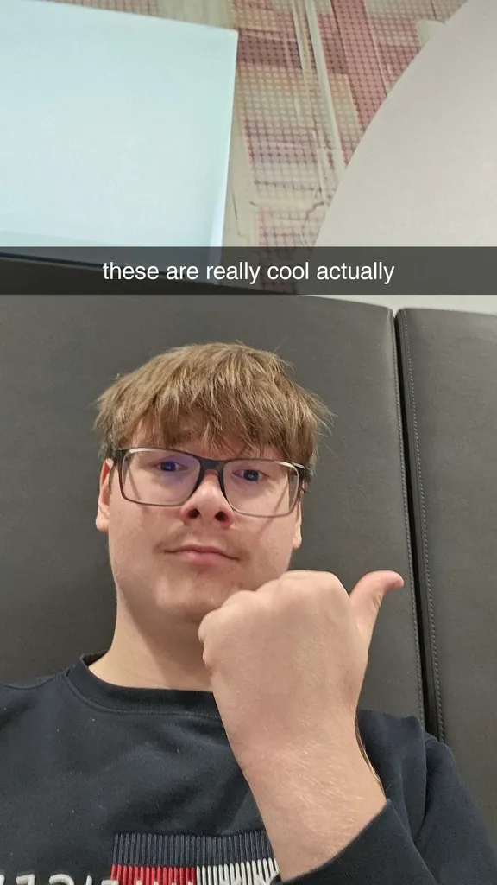
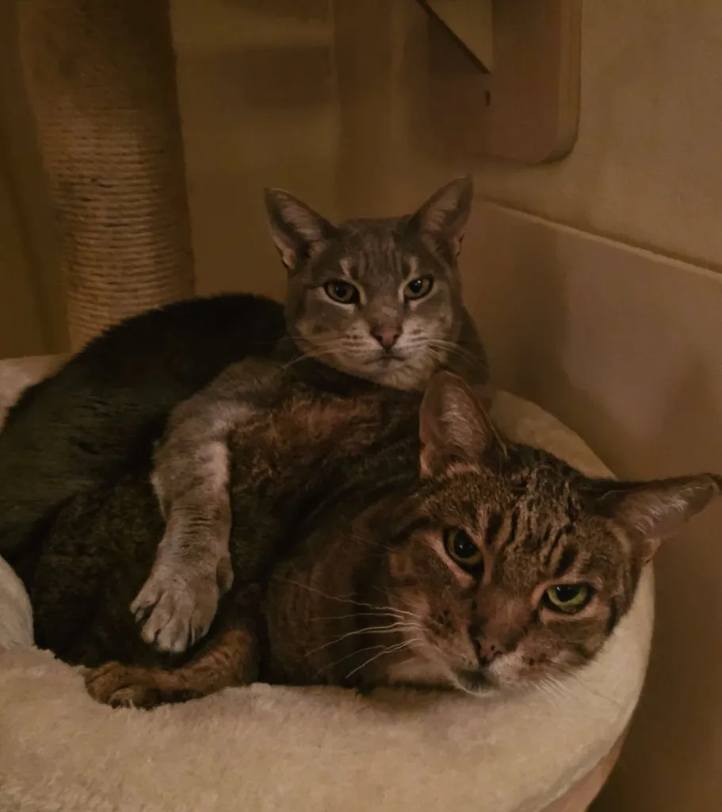
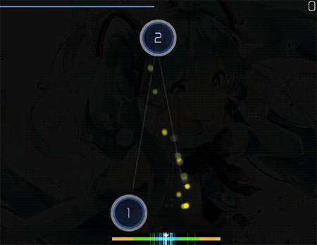
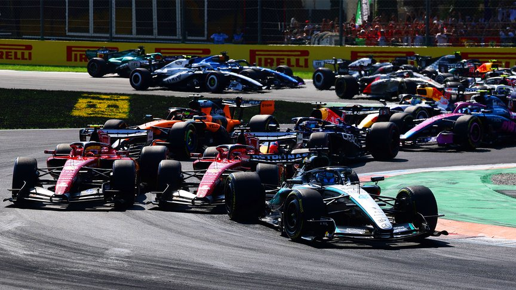
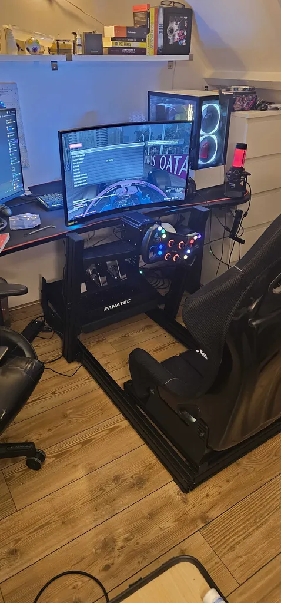

Hello, I’m Tias. I like playing video games and making silly coding projects. I am good at adapting to situations and spending the necessary time to do a good job at what I need or want to do. I choose HBO-ICT because I like coding and solving problems in creative and efficient ways. I can be very passsionate for projects or interests I care about, and work really hard to make sure I do a good job. I have 2 cats that are really cool and I love them.


I enjoy playing video games casually and competitively. I used to play the F1 game series on a professional level but unfortunately had to quit due to injury.
Here's a list of my favorite video games (in no particular order):

I also like to make silly programming projects, some of these are on my Github or on p5.js. These are usually little games, a tool that I needed once (and probably never again) or something that I think looks cool. I have also developed my own rhythm game together with a classmate, more on that here.

I enjoy watching car races. My favorite racing category used to be Formula 1, but unfortunately I'm starting to lose interest due to new regulations that make the racing worse in my opinion. I also enjoy watching endurance races and rallies from time to time. The main reason I like racing is because I really appreciate the precision and skill needed to compete, and battles between drivers can get really intense especially with a story forming throughout a season. A race can also get really strategical in a lot of ways that aren't obvious to the untrained eye, which is fun.
I'm also an retired professional F1 simracer. I spent about 3000 hours on the F1 games to become as good as possible, and I got very far. After reaching the top 50 in the world I landed a contract with Veloce, the organisation handling the F1 Esports side of Ferrari, McLaren, and Mercedes. Unfortunately during my time at their academy, I got into an accident during PE class and ended up needing surgery for my elbow. This ended my run as a simracer, which really stung. Now I've made peace with it, as it freed up a lot of time and allowed me to pursue other interests.

These are some of my strengths: